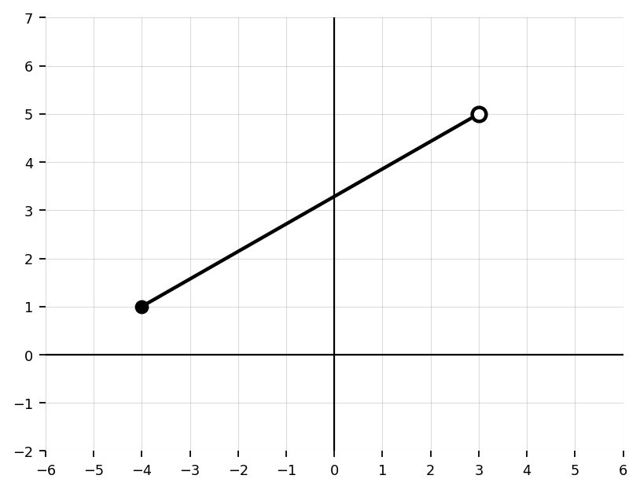
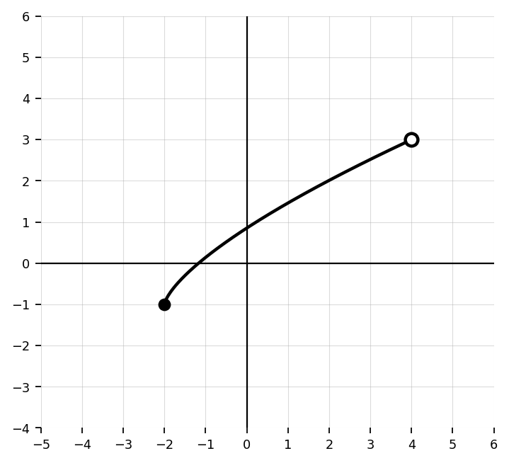
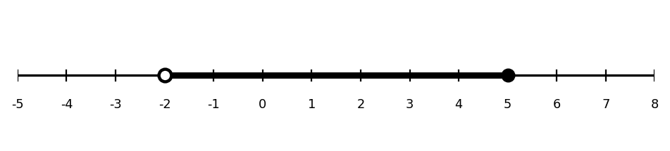
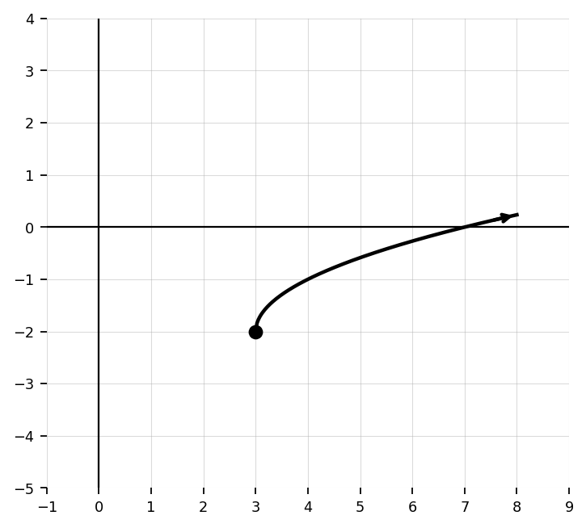

Unit 1 Section 1.3: Domain & Range
Determine the domain of $f(x)=x^2-4x+7$.
Determine the domain of $g(x)=\sqrt{x-5}$.
Determine the domain of $h(x)=\sqrt{x+2}$.
Determine the domain of $p(x)=\frac{1}{x-3}$.
Determine the domain of $r(x)=\frac{2x+1}{x+4}$.
Use the graph to determine the range of the function. Write your answer in interval notation.

Use the graph to determine the domain of the function. Write your answer in interval notation.

Use the graph to determine the domain and range of the function.

State whether each endpoint is included or excluded in $[-3,7)$.
Rewrite the set $x\ge -1$ in interval notation.
Rewrite the set $-5
Use the number line to write the set in interval notation.

Determine the domain of $f(x)=\sqrt{9-x}$.
Determine the domain of $f(x)=\frac{x+2}{x^2-9}$.
Determine the domain of $f(x)=\sqrt{2x-6}$ and write it in interval notation.
Determine the domain of $g(x)=\sqrt{12-3x}$ and write it in interval notation.
Determine the domain of $h(x)=\frac{x+5}{x^2-4x}$.
Determine the domain of $p(x)=\frac{3}{(x+1)(x-6)}$.
Determine the domain and range of the graphed function. Use interval notation.

Determine the domain and range of the graphed function. Use interval notation.

Determine the domain and range of the graphed function. Use interval notation.

A function has domain $(-\infty,-2]\cup(1,\infty)$. Describe what this means in words.
A graph has domain $[-4,6)$ and range $(-2,5]$. Describe the possible endpoints and output values.
The table gives values of a function. Determine the domain and range of the relation.
- $x$: $-3,-1,0,4,7$
- $f(x)$: $5,2,2,-6,1$
The table gives values of a function. Determine the domain and range of the relation.
- $x$: $-2,-2,1,3,5$
- $g(x)$: $4,6,0,0,-1$
A function $C(t)$ represents the cost of renting a kayak for $t$ hours. The rental shop allows rentals from $0$ to $8$ hours. State the reasonable domain in interval notation and explain the endpoint inclusion.
A function $H(t)$ represents the height of a ball thrown from the ground. The maximum height is $64$ feet and the ball returns to the ground. State a reasonable range and explain it.
Determine the domain of $f(x)=\frac{\sqrt{x-1}}{x-5}$.
A student says the domain of $f(x)=\sqrt{x-4}$ is all real numbers because any number can be substituted for $x$. Explain the error and give the correct domain.
Explain why $x=2$ must be excluded from the domain of $g(x)=\frac{x+1}{x-2}$ even though the numerator is defined at $x=2$.
Compare the domains of $f(x)=\sqrt{x-3}$ and $g(x)=\frac{1}{x-3}$. Explain why the restrictions are different.
Two students analyze the same graph. Student A says the range is $[-2,5]$. Student B says the range is $(-2,5]$. The graph has an open point at the lowest output and a closed point at the highest output. Who is correct? Explain.
Use the graph to determine the domain and range. Then justify how endpoint types and arrows affected your answer.

For $f(x)=\sqrt{x+6}$, determine the domain algebraically. Then describe what the graph must look like near its left endpoint.
A function models the number of students remaining in a gym after dismissal. Explain why the domain and range should not automatically be all real numbers, even if a formula could be evaluated for all real $x$.
A student finds the domain of $f(x)=\frac{x}{x^2-25}$ and writes $(-\infty,\infty)$ because the denominator is a polynomial. Identify the mistake and correct the domain.
A table shows outputs $-1,0,3,3,7$ for inputs $-4,-2,0,2,4$. A graph of the same function has arrows continuing beyond the table. Explain why the table alone may not show the full domain and range.
Explain how the domain restriction of $f(x)=\frac{1}{x+8}$ appears in the graph of the function.
Compare the domains of $f(x)=\sqrt{x}$, $g(x)=\sqrt{-x}$, and $h(x)=x^2$. Explain how the structure of each function determines its domain.
A graph has domain $[-6,2)\cup(2,8]$ and range $[-3,5]$. Describe one possible graphical feature that could cause $x=2$ to be excluded while nearby $x$-values are included.
Create a function whose domain is $[4,\infty)$. Explain why your function has that domain.
Create a rational function whose domain excludes exactly $x=-3$ and $x=5$. Explain your reasoning.
Design a graph with domain $(-\infty,1]\cup(3,\infty)$ and range $[-2,\infty)$. Describe the graph or sketch it.
A student claims that every function with a restricted domain must have a restricted range. Decide whether this claim is always true, sometimes true, or never true. Support your answer with examples.
A school sells tickets for a dance. Tickets cost $8 each, and the room can hold at most 250 students. Define a function for revenue based on tickets sold. State a reasonable domain and range, and explain why both are restricted.
Create two different functions with the same domain $x e 2$ but different ranges. Explain how you know the domains match and the ranges differ.
A student models the height of water in a tank with $h(t)=20-2t$ and gives the domain $(-\infty,\infty)$. Critique the domain and propose a more reasonable domain and range.
Write an equation, table, or graph description for a function with domain $[-2,6]$ and range $[1,9]$. Then explain how your representation guarantees both the domain and range.